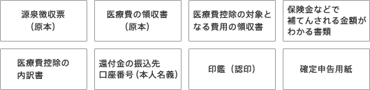

インプラントならアイデンタルクリニック トップページ > 医療費控除について > 医療費控除申告に必要な書類の準備

国税庁のホームページを利用する場合は「確定申告書等作成コーナー」より、「申告書の作成開始」をクリックして、「電子申告（e-Tax）により提出」か、「申告書等を印刷して提出」のどちらか該当する方を選択して手続きに進んで下さい。
※確定申告が初めての方、または用紙の記入に不安がある方は、相談窓口を利用することができます。
| 国税庁 | https://www.keisan.nta.go.jp/ |
|---|
- 医療費控除の対象となる条件
- 医療費控除金額の計算
- 医療費控除金額のカンタン計算ツール
- 医療費控除申告に必要な書類の準備
- 医療費控除の申告方法